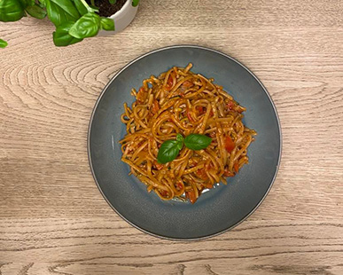

Med one pot-retter er det kun
fantasien, der sætter grænser
for, hvad der skal mikses.
Her får du blot vores bud på en
fremragende en af slagsen.
Retten er super enkel og smager
skønt. Velbekomme!

Ingredienser
(4 personer)
400 g Urtekram Fettuccine
1 dåse hakkede tomater
1 håndfuld frisk basilikum
1 løg, finthakket
2 fed hvidløg, finthakket
20 cherrytomater, i både
1/2 squash
1 tsk. oregano, tørret
50 g chorizo, finthakket
5 dl grøntsagsbouillion
2 spsk. olivenolie
1 tsk. salt
Sort peber, friskkværnet
Fremgangsmåde
Kom alle ingredienserne i en stor gryde på én gang.
Lad retten koge op, rør godt rundt i gryden og
skru ned for varmen.
Lad retten simre under låg i 10-12 min. indtil pasta-
en er kogt færdig.
Server gerne med parmesan og basilikum.